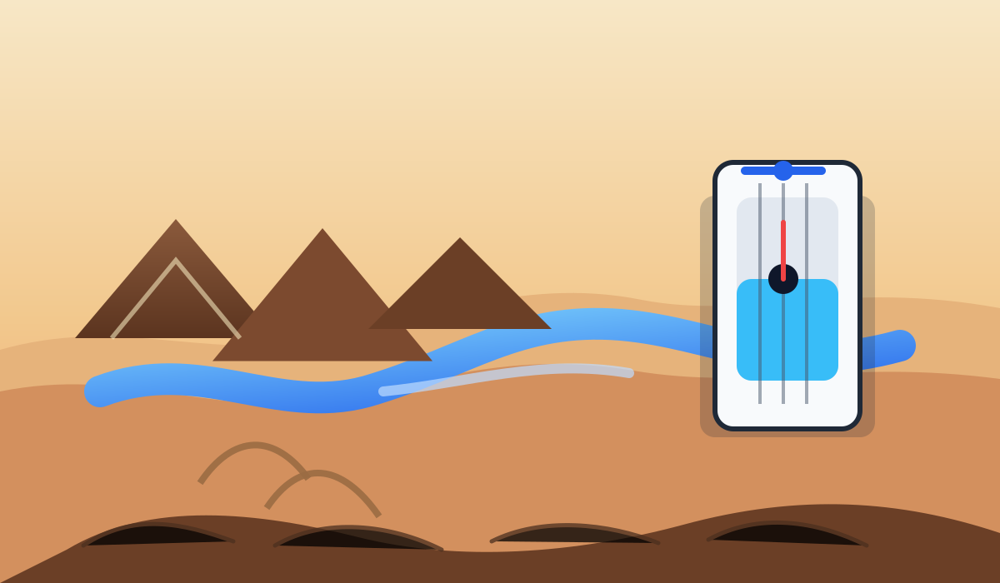

Kolm osariiki proovivad Colorado jõge stabiliseerida

AP kirjutab, et California, Nevada ja Arizona leppisid kokku ajutises veesäästuplaanis, mille eesmärk on Colorado jõelt kuni 2028. aastani survet maha võtta. Kolm osariiki tahavad kokku hoida 3,2 miljonit acre-foot'i vett — mõõtühik, mis kõlab juba ise nagu hädakella variant.
Lääne-USA veevaidlus ei ole enam ammu lihtsalt kuivale jäävate paatide ja luhtuvate niisutusplaanide lugu. Lake Mead ja Lake Powell tuletavad regulaarselt meelde, et jõe ümber ehitatud süsteem töötab ainult seni, kuni vett veel jagub.
Uudis on pigem pragmaatiline kui inspireeriv: keegi ei kuuluta suurt võitu, vaid üritab vältida seda, et probleem oleks varsti veel suurem. Aga ausalt öeldes on ka see kliimapoliitikas juba üsna korralik saavutus.
Loe algallikat: AP News – "Kolm osariiki proovivad Colorado jõge stabiliseerida"
selle artikli sisu sõnastatud AI poolt: (mudel gpt-5.4-mini)